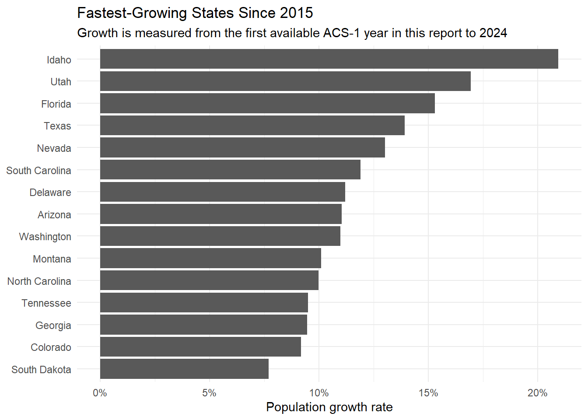

Internal migration matters because population movement changes state populations, and state populations determine political power through congressional apportionment. In this report, I use Census ACS migration flow data to study movement between states and metro areas. I then use recent migration patterns to produce a simple forecast of 2030 state populations and estimate how congressional seats could be distributed after the next Census.
This report finds that internal migration is not evenly distributed across the United States. Recent population growth is concentrated in faster-growing Sun Belt and Mountain West states, while New York faces pressure from out-migration to other large states and nearby metro areas. For New York, migration appears to be a political representation challenge because sustained population losses can reduce its relative share of the national population. The projection model used here is intentionally simple, but it helps show how even modest annual migration patterns can matter when congressional seats are allocated after the next Census.
The state_population data frame contains one row per state and ACS year, with a state name, state abbreviation, year, and total population estimate. The ACS-1 file was not released for 2020, so the analysis uses 2015–2019 and 2021–2024.
state state_abbr year total_population
1 Alabama AL 2015 4858979
2 Alabama AL 2016 4863300
3 Alabama AL 2017 4874747
4 Alabama AL 2018 4887871
5 Alabama AL 2019 4903185
6 Alabama AL 2021 5039877
7 Alabama AL 2022 5074296
8 Alabama AL 2023 5108468
9 Alabama AL 2024 5157699
10 Alaska AK 2015 738432
State-to-State Migration Flows
The state-to-state migration data comes from Census Excel files. The 2024 file is in a long format, while the 2023 file is in a wide matrix format. Because of this, the two years require different cleaning approaches before they can be combined.
# A tibble: 10 × 5
state_current state_1y population year_current year_1y
<chr> <chr> <int> <int> <int>
1 AL AK 387 2024 2023
2 AL AZ 2055 2024 2023
3 AL AR 958 2024 2023
4 AL CA 7145 2024 2023
5 AL CO 2994 2024 2023
6 AL DE 0 2024 2023
7 AL FL 16423 2024 2023
8 AL GA 15194 2024 2023
9 AL HI 772 2024 2023
10 AL ID 973 2024 2023
The 2024 migration table is cleaned into state abbreviations, numeric population values, and year columns.
# A tibble: 10 × 5
state_current state_1y population year_current year_1y
<chr> <chr> <int> <int> <int>
1 AL AK 780 2023 2022
2 AL AZ 4470 2023 2022
3 AL AR 1584 2023 2022
4 AL CA 4921 2023 2022
5 AL CO 1601 2023 2022
6 AL CT 283 2023 2022
7 AL DE 330 2023 2022
8 AL <NA> 273 2023 2022
9 AL FL 17515 2023 2022
10 AL GA 19270 2023 2022
The 2023 migration table is cleaned into the same structure as the 2024 table, which allows the two years to be combined.
# A tibble: 20 × 5
state_current state_1y population year_current year_1y
<chr> <chr> <int> <int> <int>
1 AL AK 780 2023 2022
2 AL AZ 4470 2023 2022
3 AL AR 1584 2023 2022
4 AL CA 4921 2023 2022
5 AL CO 1601 2023 2022
6 AL CT 283 2023 2022
7 AL DE 330 2023 2022
8 AL <NA> 273 2023 2022
9 AL FL 17515 2023 2022
10 AL GA 19270 2023 2022
11 AL HI 775 2023 2022
12 AL ID 105 2023 2022
13 AL IL 3362 2023 2022
14 AL IN 1488 2023 2022
15 AL IA 151 2023 2022
16 AL KS 373 2023 2022
17 AL KY 1806 2023 2022
18 AL LA 2410 2023 2022
19 AL ME 0 2023 2022
20 AL MD 457 2023 2022
The combined migration table stacks the 2023 and 2024 flows into one consistent data frame.
# A tibble: 10 × 5
state_current state_1y population year_current year_1y
<chr> <chr> <int> <int> <int>
1 NY NY 1381992 2024 2023
2 NY NJ 36002 2024 2023
3 NY CA 31367 2024 2023
4 NY FL 28080 2024 2023
5 NY PA 23152 2024 2023
6 NY MA 17862 2024 2023
7 NY TX 16324 2024 2023
8 NY CT 15160 2024 2023
9 NY VA 10310 2024 2023
10 NY NC 10076 2024 2023
Same-state rows represent residents who stayed in the same state. For inflow and outflow analysis, those rows are excluded so that the results focus only on migration between different states.
# A tibble: 10 × 6
metro_current metro_1y moved_in moved_out metro_current_state metro_1y_state
<chr> <chr> <int> <int> <chr> <chr>
1 Abilene, TX M… Outside… 3493 3188 TX <NA>
2 Abilene, TX M… Africa 286 NA TX <NA>
3 Abilene, TX M… Asia 423 NA TX <NA>
4 Abilene, TX M… Central… 156 NA TX <NA>
5 Abilene, TX M… Europe 260 NA TX <NA>
6 Abilene, TX M… Norther… 41 NA TX <NA>
7 Abilene, TX M… South A… 49 NA TX <NA>
8 Abilene, TX M… Albuque… 55 0 TX NM
9 Abilene, TX M… Amarill… 461 118 TX TX
10 Abilene, TX M… Anchora… 0 35 TX AK
The metro migration table contains current metro names, prior-year metro names, estimated movement counts, and parsed state abbreviations for each metro.
Exploratory Data Analysis
Which states had the highest net population growth rates over the past decade?
state_growth_decade |>slice_head(n =15) |>mutate(state =fct_reorder(state, growth_rate)) |>ggplot(aes(x = state, y = growth_rate)) +geom_col() +coord_flip() +scale_y_continuous(labels =percent_format()) +labs(title ="Fastest-Growing States Since 2015",subtitle ="Growth is measured from the first available ACS-1 year in this report to 2024",x =NULL,y ="Population growth rate" ) +theme_minimal()

The fastest-growing states are concentrated mostly in the Sun Belt and Mountain West. This pattern suggests that population growth is not just a random state-by-state pattern; it is geographically clustered in places that have generally seen strong domestic migration and/or faster overall population growth. This matters for reapportionment because congressional seats follow population, so sustained growth in these regions can shift political representation away from slower-growing Northeastern and Midwestern states.
New York State: Where do people come from and where do they go?
Code
latest_state_year <-max(state_migration$year_current)ny_in_states <- state_migration |>filter( year_current == latest_state_year, state_current == FOCUS_STATE_ABBR, state_1y != FOCUS_STATE_ABBR ) |>left_join(states_df, by =c("state_1y"="state_abbr")) |>arrange(desc(population))ny_out_states <- state_migration |>filter( year_current == latest_state_year, state_1y == FOCUS_STATE_ABBR, state_current != FOCUS_STATE_ABBR ) |>left_join(states_df, by =c("state_current"="state_abbr")) |>arrange(desc(population))ny_in_states |>select(origin_state = state, population) |>slice_head(n =10) |>gt() |>fmt_integer(population) |>tab_header(glue("Most Common Origins for People Moving into {FOCUS_STATE}"))
Most Common Origins for People Moving into New York
origin_state
population
New Jersey
36,002
California
31,367
Florida
28,080
Pennsylvania
23,152
Massachusetts
17,862
Texas
16,324
Connecticut
15,160
Virginia
10,310
North Carolina
10,076
Maryland
8,400
Code
ny_out_states |>select(destination_state = state, population) |>slice_head(n =10) |>gt() |>fmt_integer(population) |>tab_header(glue("Most Common Destinations for People Leaving {FOCUS_STATE}"))
Most Common Destinations for People Leaving New York
destination_state
population
New Jersey
56,799
Florida
50,661
Pennsylvania
29,274
Texas
28,233
Connecticut
25,095
California
24,927
Massachusetts
18,697
South Carolina
18,324
North Carolina
17,978
Virginia
16,364
New York’s migration flows are strongly connected to large nearby states and other major population centers. The source table shows where new New York residents most commonly lived one year earlier, while the destination table shows where former New York residents are moving. Comparing the two tables is important because New York can receive many movers from a state and still lose population overall if even more New Yorkers move in the opposite direction.
New York City Metro: Where do people come from and where do they go?
Top Metro Sources of Migration into New York-Newark-Jersey City, NY-NJ-PA Metro Area
origin_metro
moved_in
Philadelphia-Camden-Wilmington, PA-NJ-DE-MD Metro Area
19,600
Washington-Arlington-Alexandria, DC-VA-MD-WV Metro Area
11,162
Boston-Cambridge-Newton, MA-NH Metro Area
10,019
Los Angeles-Long Beach-Anaheim, CA Metro Area
9,761
Poughkeepsie-Newburgh-MiddleTown, NY Metro Area
9,492
Miami-Fort Lauderdale-Pompano Beach, FL Metro Area
8,085
Bridgeport-Stamford-Norwalk, CT Metro Area
7,534
Trenton-Princeton, NJ Metro Area
7,208
San Francisco-Oakland-Berkeley, CA Metro Area
6,923
Albany-Schenectady-Troy, NY Metro Area
5,512
Code
metro_out_of_focus |>select(destination_metro = metro_current, moved_out_from_focus = moved_in) |>slice_head(n =10) |>gt() |>fmt_integer(moved_out_from_focus) |>tab_header(glue("Top Metro Destinations for People Leaving {focus_metro}"))
Top Metro Destinations for People Leaving New York-Newark-Jersey City, NY-NJ-PA Metro Area
destination_metro
moved_out_from_focus
Philadelphia-Camden-Wilmington, PA-NJ-DE-MD Metro Area
35,254
Miami-Fort Lauderdale-Pompano Beach, FL Metro Area
22,411
Washington-Arlington-Alexandria, DC-VA-MD-WV Metro Area
17,558
Los Angeles-Long Beach-Anaheim, CA Metro Area
17,107
Bridgeport-Stamford-Norwalk, CT Metro Area
16,709
Poughkeepsie-Newburgh-MiddleTown, NY Metro Area
15,475
Boston-Cambridge-Newton, MA-NH Metro Area
15,162
Atlanta-Sandy Springs-Alpharetta, GA Metro Area
12,928
Trenton-Princeton, NJ Metro Area
12,735
Allentown-Bethlehem-Easton, PA-NJ Metro Area
12,284
The New York City metro area is connected most strongly to other large metro areas, especially places with economic, family, and transportation ties to the Northeast. These flows show that metro-level migration is not only about distant moves; it also includes movement between closely linked regional economies. The top origins and destinations are useful because they identify the places where New York already has an active migration relationship.
Which states have had the highest in-migration, out-migration, and net migration?
state_migration_summary |>arrange(desc(out_migration)) |>select(state, in_migration, out_migration, net_migration) |>slice_head(n =10) |>gt() |>fmt_integer(c(in_migration, out_migration, net_migration)) |>tab_header("States with the Highest Out-Migration")
States with the Highest Out-Migration
state
in_migration
out_migration
net_migration
California
404,745
656,646
−251,901
Florida
571,998
505,072
66,926
Texas
553,869
482,029
71,840
New York
280,073
412,187
−132,114
Illinois
199,235
279,613
−80,378
Virginia
255,491
256,633
−1,142
Pennsylvania
232,208
247,858
−15,650
North Carolina
297,704
239,780
57,924
Georgia
265,364
228,039
37,325
New Jersey
149,512
211,969
−62,457
Code
state_migration_summary |>arrange(desc(net_migration)) |>select(state, in_migration, out_migration, net_migration) |>slice_head(n =10) |>gt() |>fmt_integer(c(in_migration, out_migration, net_migration)) |>tab_header("States with the Highest Net Internal Migration")
States with the Highest Net Internal Migration
state
in_migration
out_migration
net_migration
Texas
553,869
482,029
71,840
Florida
571,998
505,072
66,926
North Carolina
297,704
239,780
57,924
Arizona
234,723
178,678
56,045
South Carolina
189,282
134,348
54,934
Nevada
129,109
88,898
40,211
Georgia
265,364
228,039
37,325
Tennessee
191,386
155,499
35,887
Oklahoma
106,621
72,461
34,160
Alabama
119,767
97,317
22,450
Code
state_migration_summary |>arrange(net_migration) |>select(state, in_migration, out_migration, net_migration) |>slice_head(n =10) |>gt() |>fmt_integer(c(in_migration, out_migration, net_migration)) |>tab_header("States with the Lowest Net Internal Migration")
States with the Lowest Net Internal Migration
state
in_migration
out_migration
net_migration
California
404,745
656,646
−251,901
New York
280,073
412,187
−132,114
Illinois
199,235
279,613
−80,378
New Jersey
149,512
211,969
−62,457
Massachusetts
150,513
180,497
−29,984
Colorado
181,683
204,323
−22,640
Pennsylvania
232,208
247,858
−15,650
Louisiana
70,847
82,616
−11,769
Alaska
29,456
39,842
−10,386
Iowa
59,199
69,417
−10,218
The net migration table shows that some states are clear internal-migration winners while others are clear internal-migration losers. States with high positive net migration are attracting more residents from the rest of the country than they are sending away. States with negative net migration, including many expensive or older-growth states, face a disadvantage because domestic movement directly reduces their population base relative to faster-growing states.
Metro-Level In-Migration, Out-Migration, and Net Migration
Washington-Arlington-Alexandria, DC-VA-MD-WV Metro Area
209,588
251,422
−41,834
Phoenix-Mesa-Chandler, AZ Metro Area
182,053
126,179
55,874
Atlanta-Sandy Springs-Alpharetta, GA Metro Area
179,899
169,450
10,449
Riverside-San Bernardino-Ontario, CA Metro Area
178,045
137,731
40,314
Houston-The Woodlands-Sugar Land, TX Metro Area
164,233
151,238
12,995
San Francisco-Oakland-Berkeley, CA Metro Area
162,213
204,077
−41,864
Chicago-Naperville-Elgin, IL-IN-WI Metro Area
156,175
245,692
−89,517
Code
metro_summary |>arrange(desc(out_migration)) |>slice_head(n =10) |>gt() |>fmt_integer(c(in_migration, out_migration, net_migration)) |>tab_header("Metro Areas with the Highest Out-Migration")
Metro Areas with the Highest Out-Migration
metro
in_migration
out_migration
net_migration
New York-Newark-Jersey City, NY-NJ-PA Metro Area
235,844
490,636
−254,792
Los Angeles-Long Beach-Anaheim, CA Metro Area
242,529
375,810
−133,281
Washington-Arlington-Alexandria, DC-VA-MD-WV Metro Area
209,588
251,422
−41,834
Chicago-Naperville-Elgin, IL-IN-WI Metro Area
156,175
245,692
−89,517
San Francisco-Oakland-Berkeley, CA Metro Area
162,213
204,077
−41,864
Dallas-Fort Worth-Arlington, TX Metro Area
215,511
180,491
35,020
Miami-Fort Lauderdale-Pompano Beach, FL Metro Area
135,718
176,510
−40,792
Atlanta-Sandy Springs-Alpharetta, GA Metro Area
179,899
169,450
10,449
Philadelphia-Camden-Wilmington, PA-NJ-DE-MD Metro Area
152,142
166,866
−14,724
Boston-Cambridge-Newton, MA-NH Metro Area
134,190
160,705
−26,515
Code
metro_summary |>arrange(desc(net_migration)) |>slice_head(n =10) |>gt() |>fmt_integer(c(in_migration, out_migration, net_migration)) |>tab_header("Metro Areas with the Highest Net Migration")
Metro Areas with the Highest Net Migration
metro
in_migration
out_migration
net_migration
Phoenix-Mesa-Chandler, AZ Metro Area
182,053
126,179
55,874
Riverside-San Bernardino-Ontario, CA Metro Area
178,045
137,731
40,314
Dallas-Fort Worth-Arlington, TX Metro Area
215,511
180,491
35,020
Austin-Round Rock-GeorgeTown, TX Metro Area
116,913
85,901
31,012
Las Vegas-Henderson-Paradise, NV Metro Area
92,544
61,696
30,848
Tampa-St. Petersburg-Clearwater, FL Metro Area
134,637
105,146
29,491
Orlando-Kissimmee-Sanford, FL Metro Area
133,976
105,395
28,581
Jacksonville, FL Metro Area
73,419
54,772
18,647
Deltona-Daytona Beach-Ormond Beach, FL Metro Area
41,276
23,312
17,964
Nashville-Davidson--Murfreesboro--Franklin, TN Metro Area
73,461
55,589
17,872
The metro-level results show that large metro areas often have very high movement in both directions. A metro can rank high in in-migration and out-migration at the same time because big regions naturally generate more total moves. For this reason, net migration is more informative than raw in-flow or out-flow alone when judging whether a metro is actually gaining or losing residents through migration.
Which states have the highest fraction of residents who lived there last year?
States with the Highest Share of Residents Who Stayed
state
stayed
total_observed
stayed_share
in_migration_share
California
3,339,836
3,744,581
89.19%
10.81%
Michigan
885,629
1,025,511
86.36%
13.64%
Texas
3,414,070
3,967,939
86.04%
13.96%
Ohio
1,131,337
1,328,808
85.14%
14.86%
Louisiana
384,128
454,975
84.43%
15.57%
Iowa
303,825
363,024
83.69%
16.31%
Illinois
993,313
1,192,548
83.29%
16.71%
New York
1,381,992
1,662,065
83.15%
16.85%
Minnesota
511,847
615,771
83.12%
16.88%
Indiana
634,441
767,813
82.63%
17.37%
States with the highest stayed share have the lowest proportional in-migration because most of their observed residents lived in the same state one year earlier. A high stayed share can mean that a state has a stable resident base, but it can also mean the state is not attracting many new residents from elsewhere. This measure is useful because it standardizes migration by state size rather than only comparing raw counts.
Which state has the highest fraction of population growth attributable to net internal migration?
Population Growth Attributable to Net Internal Migration
state
population_growth
net_migration
migration_growth_fraction
Vermont
1,029
9,231
897.1%
Mississippi
3,355
10,796
321.8%
Wyoming
3,561
6,466
181.6%
New Hampshire
6,978
6,697
96.0%
Maine
9,290
8,493
91.4%
Oklahoma
41,569
34,160
82.2%
North Dakota
12,642
7,532
59.6%
Nevada
73,291
40,211
54.9%
South Carolina
105,276
54,934
52.2%
Alabama
49,231
22,450
45.6%
The migration-growth fraction table highlights states where internal migration explains a large share of recent population growth. When the fraction is high, the state’s growth is heavily dependent on attracting people from other states rather than only natural population increase. Very large or unusual percentages should be interpreted carefully because the denominator is one-year total population growth, which can be small or even negative for some states.
focus_state_out_top |>select(destination_state = state, population) |>gt() |>fmt_integer(population) |>tab_header(glue("Top Destinations of Migration out of {FOCUS_STATE}"))
Top Destinations of Migration out of New York
destination_state
population
New Jersey
56,799
Florida
50,661
Pennsylvania
29,274
Texas
28,233
Connecticut
25,095
California
24,927
Massachusetts
18,697
South Carolina
18,324
North Carolina
17,978
Virginia
16,364
The top rows of these two tables identify New York’s most important state-level migration partners. The number one source state is the place that sends the most residents into New York, while the number one destination state is the place that receives the most people leaving New York. If the destination total is larger than the comparable source total, that relationship is a net loss for New York.
Largest Metro Area in New York
For New York, the largest metropolitan area is the New York-Newark-Jersey City metro area.
External Metro Sources into New York-Newark-Jersey City, NY-NJ-PA Metro Area
origin_metro
moved_in
Philadelphia-Camden-Wilmington, PA-NJ-DE-MD Metro Area
19,600
Washington-Arlington-Alexandria, DC-VA-MD-WV Metro Area
11,162
Boston-Cambridge-Newton, MA-NH Metro Area
10,019
Los Angeles-Long Beach-Anaheim, CA Metro Area
9,761
Miami-Fort Lauderdale-Pompano Beach, FL Metro Area
8,085
Bridgeport-Stamford-Norwalk, CT Metro Area
7,534
Trenton-Princeton, NJ Metro Area
7,208
San Francisco-Oakland-Berkeley, CA Metro Area
6,923
Chicago-Naperville-Elgin, IL-IN-WI Metro Area
5,452
Atlanta-Sandy Springs-Alpharetta, GA Metro Area
4,876
Code
external_out_of_focus_metro |>select(destination_metro = metro_current, moved_out_from_focus = moved_in) |>slice_head(n =10) |>gt() |>fmt_integer(moved_out_from_focus) |>tab_header(glue("External Metro Destinations from {focus_metro}"))
External Metro Destinations from New York-Newark-Jersey City, NY-NJ-PA Metro Area
destination_metro
moved_out_from_focus
Philadelphia-Camden-Wilmington, PA-NJ-DE-MD Metro Area
35,254
Miami-Fort Lauderdale-Pompano Beach, FL Metro Area
22,411
Washington-Arlington-Alexandria, DC-VA-MD-WV Metro Area
17,558
Los Angeles-Long Beach-Anaheim, CA Metro Area
17,107
Bridgeport-Stamford-Norwalk, CT Metro Area
16,709
Boston-Cambridge-Newton, MA-NH Metro Area
15,162
Atlanta-Sandy Springs-Alpharetta, GA Metro Area
12,928
Trenton-Princeton, NJ Metro Area
12,735
Allentown-Bethlehem-Easton, PA-NJ Metro Area
12,284
Tampa-St. Petersburg-Clearwater, FL Metro Area
10,348
The external metro tables identify the strongest non-New York metro connections to the New York City region. The highest-ranked origin metro is the best target for attracting additional movers into New York, while the highest-ranked destination metro is the best target for return-migration messaging. These places are strategically important because they already have active migration pipelines with the New York City metro area.
Metro Areas with Strong Connections to New York-Newark-Jersey City, NY-NJ-PA Metro Area
origin_metro
moved_in
share_of_inflow
Philadelphia-Camden-Wilmington, PA-NJ-DE-MD Metro Area
19,600
8.31%
Washington-Arlington-Alexandria, DC-VA-MD-WV Metro Area
11,162
4.73%
Boston-Cambridge-Newton, MA-NH Metro Area
10,019
4.25%
Los Angeles-Long Beach-Anaheim, CA Metro Area
9,761
4.14%
Poughkeepsie-Newburgh-MiddleTown, NY Metro Area
9,492
4.02%
Miami-Fort Lauderdale-Pompano Beach, FL Metro Area
8,085
3.43%
Bridgeport-Stamford-Norwalk, CT Metro Area
7,534
3.19%
Trenton-Princeton, NJ Metro Area
7,208
3.06%
San Francisco-Oakland-Berkeley, CA Metro Area
6,923
2.94%
Albany-Schenectady-Troy, NY Metro Area
5,512
2.34%
Chicago-Naperville-Elgin, IL-IN-WI Metro Area
5,452
2.31%
Rochester, NY Metro Area
5,447
2.31%
Atlanta-Sandy Springs-Alpharetta, GA Metro Area
4,876
2.07%
Syracuse, NY Metro Area
4,023
1.71%
Baltimore-Columbia-Towson, MD Metro Area
4,016
1.70%
The strongest metro connections account for the largest shares of migration into the New York City metro area. These high-share metros likely reflect existing job networks, family connections, college-to-career movement, and regional ties. Because these places already send people to New York, they are more realistic targets for a population-attraction campaign than metros with little existing connection.
Population Projection Model
This section builds a simple model for forecasting 2030 state populations. The model uses national population growth and internal migration rates estimated from 2023 and 2024 flows.
# A tibble: 10 × 3
state_current state_1y migration_rate
<chr> <chr> <dbl>
1 AK AL 5.97e-11
2 AK AR 7.12e-11
3 AK AZ 1.79e-10
4 AK CA 1.16e-10
5 AK CO 3.02e-10
6 AK CT 0
7 AK DE 1.73e-10
8 AK FL 7.42e-11
9 AK GA 8.37e-11
10 AK HI 7.44e-10
The model averages the 2023 and 2024 national growth rates and the observed state-to-state migration rates. This keeps the forecast simple and transparent, but it also means the projection should be interpreted as a rough scenario rather than a precise demographic forecast.
The 2030 forecast looks reasonable as a simple continuation of recent trends because the largest states remain the largest states. California, Texas, Florida, and New York remain central to the population ranking, but their relative positions depend on whether recent growth and migration patterns continue. New York’s projected population should be read as an estimate under this model’s assumptions, not as a final Census-quality forecast.
# A tibble: 1 × 6
state state_abbr population additional_seats n_districts pop_per_district
<chr> <chr> <dbl> <int> <dbl> <dbl>
1 New York NY 21111263. 24 25 844451.
Under this projection, New York is estimated to receive 25 congressional districts after the 2030 Census. New York currently has 26 seats, so this model implies a projected change of -1 seats. This result connects the migration analysis to the political stakes of the project: even small differences in long-run population growth can matter for reapportionment.
This estimate gives a rough population threshold for New York to gain one additional congressional seat under the model. Because the Huntington-Hill method depends on every state’s population, this number should be interpreted as an approximate target rather than an exact policy goal.
Advertising Strategy Proposal
Based on the analysis above, the governor should target advertising toward places that already have strong migration connections to New York and the New York City metro area. The goal is not to convince random people across the country, but to increase movement from places where migration is already happening.
Philadelphia-Camden-Wilmington, PA-NJ-DE-MD Metro Area
35,254
Miami-Fort Lauderdale-Pompano Beach, FL Metro Area
22,411
Washington-Arlington-Alexandria, DC-VA-MD-WV Metro Area
17,558
Los Angeles-Long Beach-Anaheim, CA Metro Area
17,107
Bridgeport-Stamford-Norwalk, CT Metro Area
16,709
Proposal
For New York, I would recommend a targeted advertising campaign focused on metro areas that already send residents to the New York City metro area and metro areas that receive many former New Yorkers. The goal should not be to advertise randomly across the entire country. Instead, New York should focus on places where the migration data already shows an existing relationship with the New York City metro area.
The first part of the campaign should focus on increasing in-migration from the top external origin metros shown in the campaign target table. These metros already send people to New York, so advertising there would build on existing social, professional, and family connections. The second part should focus on return migration from the top external destination metros, because those places contain people who recently had a connection to New York and may be more persuadable than the general population.
The campaign should aim to induce roughly 200,000 additional net residents by 2030. This is a large number, so advertising alone would not be enough. The message should be paired with real policy improvements around housing affordability, job creation, public safety, transit, and quality of life. A possible slogan is “New York: Come Build What Comes Next.”
Conclusion
This project shows how migration patterns can shape both population growth and political representation. States that attract more residents from other states are more likely to gain congressional power, while states losing residents risk losing seats. For New York, the key policy challenge is to understand where movers are coming from, where residents are going, and how to convert those existing migration pathways into long-term population growth.
The results show that internal migration is a major force shaping state population change and future congressional representation. Fast-growing states are concentrated in the Sun Belt and Mountain West, while New York faces pressure from residents leaving for other states and metro areas. The model projects New York’s 2030 population at approximately 21,111,263 and estimates that New York would receive 25 congressional districts under the Huntington-Hill method. New York’s strongest migration relationships appear in both the state-level and metro-level tables, especially through the New York City metro area. Based on these findings, New York should target advertising toward metros that already exchange many movers with the NYC region, while also addressing the underlying cost and quality-of-life issues that affect whether people stay or leave.
NoteAI Usage Statement
I used generative AI (ChatGPT) to assist with debugging my Quarto document and improving code structure. All data acquisition, analysis design, and final interpretations are my own work.